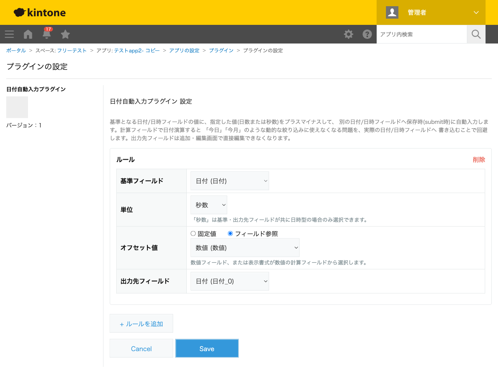

GovAppsプラグイン 安全性を確認できる無料kintoneプラグイン集
基準となる日付/日時フィールドの値に、指定した値(日数または秒数)をプラスマイナスして、別の 日付/日時フィールドへレコード保存時に自動入力するプラグインです。オフセット値は設定画面で 固定した値、または数値フィールド・計算フィールドの値をそのつど参照する方式のどちらかを選べます。 計算フィールドで日付演算すると結果が固定値になり「今日」「今月」のような動的な絞り込みに 使えませんが、本プラグインは実際の日付/日時フィールドへ書き込むため、その問題を回避できます。
緊急度を選ぶラジオボタンに連動する計算フィールド(緊急度「高」なら10、「中」なら20のような日数を返す計算フィールド)を用意しておき、「基準フィールド=申請日、単位=日数、オフセット値=この計算フィールドを参照、出力先=期限日」というルールを設定すると、保存のたびに期限日が自動計算されます。期限日は通常の日付フィールドなので、一覧画面で「期限日が今日以前」のような動的な絞り込みがそのまま使えます。
「受付日時+3600秒(1時間)」のような固定値でのオフセットも設定できます。日時フィールド同士であれば単位に「秒数」を選べるため、時間単位のタイムアウト管理や、承認依頼の自動リマインド日時の算出などにも利用できます。
出力先フィールドは、追加・編集画面および一覧のインライン編集で常に編集できなくなります(基準フィールドから自動計算される値のため)。基準フィールドが空、またはオフセット参照フィールドの値が数値として読み取れない場合は、そのルールの計算はスキップされ出力先フィールドは変更されません。一覧画面のインライン編集で基準フィールドを直接変更して保存した場合は本プラグインは発動しません(通常の追加・編集画面を経由すると再計算されます)。
kintoneセキュアコーディングガイドラインに沿って実装時にチェックしています。特に重要な点は次のとおりです。
submitイベント)のイベントオブジェクトからそのまま読み取るだけで、計算フィールドの値も含めてブラウザ上で既に計算済みの値を使うため、追加のAPI呼び出しは発生しません。外部サーバーへの通信・外部ライブラリの使用も一切ありません。innerHTMLではなくtextContentやkintone標準のフィールド値レンダリングを経由しており、DOMへ構造として解釈されません。詳細な確認項目・確認日は下記GitHubのチェックリストに全項目を掲載しています。

このプラグインはREST APIを一切実行しません。フィールド情報の取得はkintone.app.getFormFields()のみで行い、
日付の演算処理はsubmitイベント内のイベントオブジェクトに対するローカルな計算のみで完結します。
API実行数制限に影響することはありません。